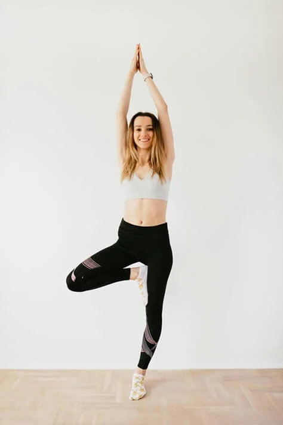
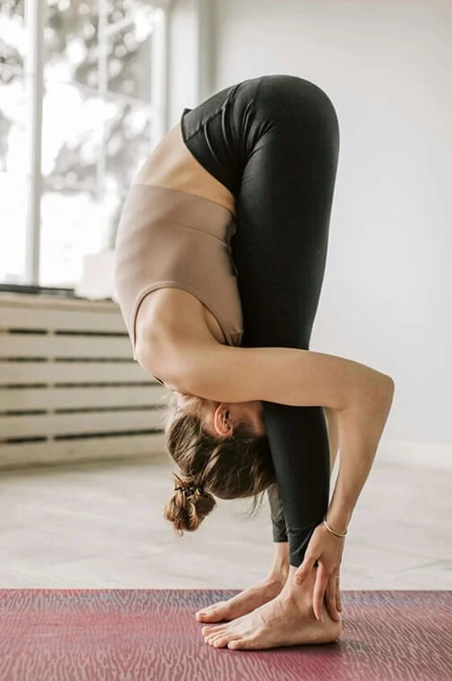
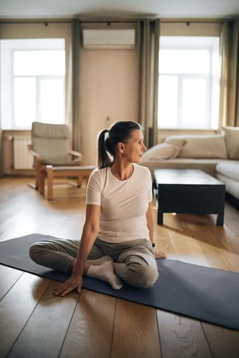

Great, that's the first step.
Yoga, itself has been around for over 5000 years* with many poses, variations and teaching style.
With this in mind, 3 poses have been selected that we feel would be for beneficial to individuals working remotely.They are aimed to help relieve back, neck and leg pain and relieve stress that can potentially come with work.
The Tree
- Start by standing straight, arms by your side.
- Raise both your hands above your head palms aligned.
- Find a focal point at eye level that you can stay focused on.
- Raise your right leg and place it above or below your left knee.
- Push your foot against your left leg gently.
- Whilst doing, this firm up your left hip which will stretch your spine. hold for as long as comfortable (up to a minute).
- Breath out as you return to standing position.
- Repeat on other leg when ready.
- It is important not to place your foot on your knee!

The forward Fold
- Similiar to the tree, stand up with your arms by your side, feet close together.
- Place your arms above your head and inhale.
- Keeping your legs straight, lower your arms touching your toes/floor.
- Keep your thighs firm in line with your ankles.
- Allow neck to relax, heading moving freely.
- Exhaling in and out in this position will allow your spine to stretch relieving tension.
- Repeat as many times as you feel comfortable doing.
- You can also hold on to your ankles. The key is to stretch your spine.

The forward Fold
- Similiar to the tree, stand up with your arms by your side, feet close together.
- Place your arms above your head and inhale.
- Keeping your legs straight, lower your arms touching your toes/floor.
- Keep your thighs firm in line with your ankles.
- Allow neck to relax, heading moving freely.
- Exhaling in and out in this position will allow your spine to stretch relieving tension.
- Repeat as many times as you feel comfortable doing.
- You can also hold on to your ankles. The key is to stretch your spine.

Please note:
The instructions given above are a quick summary and may vary from the orginal approved instructions. These are guidlines only and should only be attempted if you are able to do so.